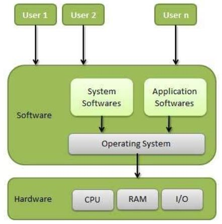

An Operating System (OS) is an interface between a computer user and computer hardware.An operating system is a software that performs all essential tasks such as file management, memory management, process management, input and output handling, and controlling peripheral devices such as disk drives and printers.
Linux Operating System, Windows Operating System, VMS, OS/400, AIX, z / OS, etc., are some popular operating systems.
An operating system is a program that acts as the user-computer hardware interface and controls the execution of all sorts of programs.
